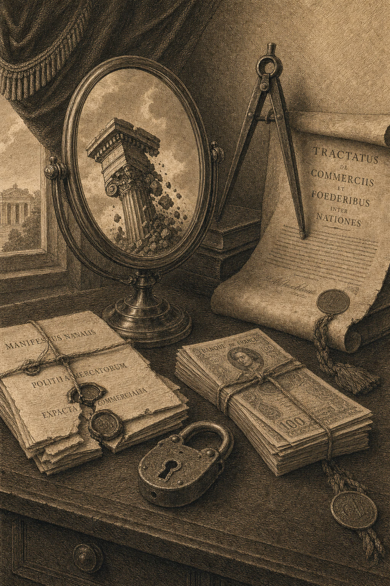

Het vijfde stuk in de Gevolgenkaart-reeks. Trump is geen Amerikaans probleem — Trump is een Europees probleem én een Europese spiegel. Twintig Europese scenario's tegen tien Trump-II-instrumenten.
Trump als spiegel
Wat Trump-II doet met Europa — en wat de spiegel ons toont
Jacobus van Merksteijn · Malta, juni 2026
De Trump-spiegel in één matrix
Twintig Europese scenario's × tien Trump-II-instrumenten. Reciprocal tariffs raken Mittelstand het hardst. ASML-toelevering verliest 28,4% omzet via tech-export-controls. Nova Democratia / VMP-kolom: voor élk scenario positief.
Wat de matrix zegt
De Mittelstand betaalt — Klaus (München) en Henrik (Wolfsburg) verliezen 32 tot 42 procent. Niet door incompetentie. Door tarieven plus de IRA-vlucht naar Texas.
De halfgeleider-sector staat alleen — ASML-toelevering verliest 28,4% via chip-export-controls. Geen ander Europees land heeft een vergelijkbare blootstelling.
De groene kolom werkt — Trumps doelen overnemen zonder zijn middelen: in 20 van 20 scenario's positief.
Vier profielen — wie betaalt de Trump-rekening
Voor vier Europeanen: alle tien Trump-II-instrumenten op één staafplaat.
Klaus Bauer · 58
Mittelständler München, machinebouw GmbH. Verliest 42 procent inkomen onder Trump-tarieven — 25 tot 60 procent reciprocal tariffs op Duitse machinebouw. Hij heeft niets verkeerd gedaan: hij produceert wat Europa altijd produceerde.
Henrik Schmidt · 38
Auto-engineer bij VW Wolfsburg. Verliest 32 procent via tarief én IRA-subsidies — VW verplaatst capaciteit naar Mexico en Tennessee. Twee schokken tegelijk: handel én industriële vlucht.
ASML-toelevering
Nederlandse halfgeleider-export. Verliest 28,4 procent omzet onder Trump's chip-export-controls. Niet door tarief — door directe vergunning-weigering voor export naar Chinese klanten. Geïsoleerd op één unieke as.
Sofia Conti · 41
Luxe-handwerk Florence. Verliest 31,2 procent via tarief én exemption-deals: Trump biedt Zwitserse luxe-bedrijven gunstigere voorwaarden. Twee klappen zonder onderhandelingspositie.
Vijf observaties — wat de Trump-matrix toont
OBSERVATIE I
Mittelstand verliest meeste — niet door incompetentie
Reciprocal tariffs van 25–60 procent raken auto, machinebouw en chemie het hardst. Het Duitse Mittelstand-model — exporterende familiebedrijven — was ontworpen voor een Amerikaanse afzetmarkt die nu sluit.
OBSERVATIE II
De halfgeleider-sector is geïsoleerd
Trump's chip-export-controls treffen Nederland uniek. Geen ander Europees land heeft een vergelijkbare blootstelling. De Nederlandse soevereine afhankelijkheid van één technologie wordt zichtbaar — én pijnlijk.
OBSERVATIE III
Luxe-export wordt twee keer geraakt
Italiaanse luxe-export verliest via tarief én via Trump's selectieve exemption-deals met andere landen (CH, UK, JP). Een dubbele klap zonder onderhandelingspositie.
OBSERVATIE IV
Zuid-Europa blijft buiten beeld
Catarina en Marie verliezen minder onder Trump dan onder Brussel. Het is de Duitse Mittelstand die de Trump-rekening betaalt — niet de Portugese verpleegkundige. De Brusselse Gevolgenkaart toont het omgekeerde.
OBSERVATIE V
Nova Democratia +5,4% gemiddeld
Trumps doelen overnemen — energie-autonomie, industriële heropbouw, Pillar Two heronderhandelen — zonder zijn middelen. In élk scenario positief. Niet als utopie, als rekensom.
Stille uitleg
Trump is geen tegenstander, Trump is een spiegel
**Titel: Trump is geen tegenstander. Trump is een spiegel die Europa moet bekijken**
Het narratief in Europese media over Trump-II is monotoon. Trump is gevaarlijk, Trump is irrationeel, Trump is een aanval op de internationale orde. Dat is allemaal grotendeels waar. Maar het is incompleet. Wie zich beperkt tot het verwerpen van Trump, mist de spiegel die Trump Europa voorhoudt.
Het vijfde stuk in de Gevolgenkaart-reeks, 'Trump als spiegel', rekent het door. Twintig Europese scenario's --- burgers en bedrijven uit zeventien EU-lidstaten plus UK --- gemeten tegen tien Trump-II-instrumenten. Het beeld is uniform rood: Duitse Mittelständler verliest 42 procent inkomen, BASF-achtige chemie 30 procent omzet, Skoda-toelevering 26 procent. Maar dat is niet het belangrijkste cijfer.
Het belangrijkste cijfer staat in de laatste kolom van de matrix. Daar --- onder het label 'Nova Democratia / VMP' --- staan groene getallen tussen de twee en de veertien procent positief. Dat is geen utopie, geen partijpropaganda, geen schimmige hoop. Het is een modeluitkomst die toont dat Europa, mits het Trumps doelen overneemt zonder zijn middelen, in 2030 winnaar kan zijn in plaats van verliezer.
Drie spanningen liggen onder deze conclusie.
Eerste spanning: Trumps tarieven raken juist Europa. Het narratief is 'Amerika eerst, China eerst-getroffen'. Het tweede-orde-effect is dat 'Amerika eerst' onvermijdelijk 'Europa later' betekent --- een Europese exportmotor die op Amerikaanse afzetmarkten draait, kraakt onder 25 tot 60 procent tarieven. De Duitse autosector, de Italiaanse luxe-export, de Nederlandse halfgeleider-toelevering, de Tsjechische auto-onderdelen, allen.
Tweede spanning: Brussel maakt Europa al kwetsbaar voor die druk. Was Europa een gezonde uitgangspositie geweest, dan zouden Trumps tarieven pijnlijk maar overkomelijk zijn. Maar door tien jaar Pillar Two, Fit-for-55, CBAM en Migratiepact is de Europese welvaartsbasis al verzwakt. Trump treft een verzwakt slachtoffer.
Derde spanning: Trump zegt iets met zijn beleid wat Europese leiders niet durven zeggen. Dat welvaart een keuze is, dat industriële capaciteit gekoesterd moet worden, dat energiekosten productie bepalen, dat belasting-arbitrage talent verplaatst. Hij zegt het met instrumenten die Europa moreel afwijst --- tarieven, populisme, internationaal recht breken. Maar het doel onder die instrumenten is precies wat Europa zou moeten willen.
De vraag is dan niet: voor of tegen Trump. De vraag is: hoe Trumps diagnose ernstig nemen zonder zijn middelen over te nemen.
Vijf concrete consequenties.
Eén: energie-autonomie tegen 2030. Geen tarief nodig --- goedkope energie nodig. Kernenergie hoog op de agenda, LNG-permitting versnellen, en het einde van de Net-Zero-by-2050-spagaat waarin hoge prijzen worden geaccepteerd alsof zij gratis zijn. Een Europese gas-MWh-prijs van vier euro is haalbaar; nu zit hij op twaalf.
Twee: industriële heropbouw zonder subsidie-roulette. Geen 'Made in Europe' via tarieven, maar een single market die werkt voor industrie. Een einde aan het opbod tussen lidstaten voor één halfgeleiderfabriek terwijl het totaal krimpt.
Drie: Pillar Two heronderhandelen. Trumps OBBBA toont dat lage vennootschaps-belasting talent en kapitaal trekt. Europa kiest nu Pillar Two-conformiteit, verliest uitstroom naar de VS. Een Europese bandbreedte met productie-aftrekken blijft competitief.
Vier: meritocratie als wapen. Trumps 'Buy American' is in feite meritocratische selectie ten gunste van Amerikaanse leveranciers. Europa kan hetzelfde doen door diversiteitsquota te vervangen door capaciteitsquota.
Vijf: migratiepact heropenen voor productieve migratie. Niet Trumps deportatie-extreem, niet Brussels distributie-extreem --- selectie op kennis, vaardigheden en bijdragecapaciteit.
Dat is geen kopie van Trump. Dat is Trumps diagnose serieus nemen zonder zijn instrumenten over te nemen. Nova Democratia, het politieke project waaraan de Gevolgenkaart-reeks bouwt, vertaalt deze vijf punten naar een Europees manifest. De referentiekolom in de matrix toont wat het modelmatig oplevert.
Wie Trump verwerpt zonder Europa te hervormen, kiest impliciet voor langzame vermalsing tussen Brussels meel en Washingtons schok. Wie Trump kopieert, verkoopt zijn eigen democratische en juridische fundamenten. Wie Trumps doelen overneemt zonder zijn middelen, vindt het enige pad waarop Europa modelmatig wint. De keuze ligt op tafel. Lees de volledige analyse op trump-spiegel-punt-openvizier-punt-org en kies.

Jacobus van Merksteijn
Hoofdredacteur van Het Open Vizier. Ondernemer, ontwikkelaar van industriële en governance-innovaties (Carbon-Alert Ltd, TerraClean Ltd, GuardSkin Ltd). Schrijft over economische, ecologische en politieke systeemvraagstukken vanuit ervaring met de Brusselse en Haagse besluitvormingsmachine.